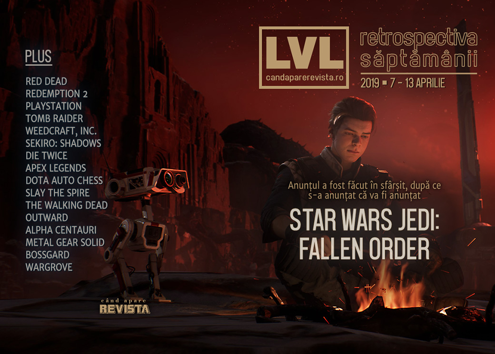

Retrospectiva săptămânii 7 - 13 aprilie 2019
A fost anunțat, în sfârșit, Star Wars Jedi: Fallen Order, Rockstar își încheie socotelile cu Pinkertonii, un AI șterge pe jos cu campionii mondiali de Dota 2, iar rețelele sociale nu vor să facă reclamă la (jocul cu) marijuana. Plus, ca în fiecare săptămână, avem mult material de citit despre Sekiro: Shadows Die Twice (încă), Outward, Metal Gear Solid, Dune, The Walking Dead, Alpha Centauri și… Windows 3.1.
Linkuri rapide:
- Știri
- Articole (critică, dev, design)
- Made în România
- Anunţuri şi lansări de jocuri
- Prăvălii de jocuri

Știri
- Rockstar renunță la procesul pe care îl intentaseră agenției Pinkerton ca răspuns la scrisoarea de cease and desist pe care aceștia o trimiseră la începutul anului, sperând probabil să obțină o porție din câștigurile lui Red Dead Redemption 2. Cele două părți au ajuns cel mai probabil la o înțelegere separată. (Games Informer, The Verge, GamesIndustry.biz, Destructoid)
Sistemul de inteligență artificială produs de OpenAI pentru a juca Dota 2 a învins, în cadrul unor meciuri demonstrative, echipa care a câștigat anul trecut The International, cel mai mare turneu de Dota 2. (The Verge, VentureBeat, Games Informer)
Unul dintre fondatorii studiourilor Infinity Ward și Respawn, Jason West, a fost angajat de Epic Games. (Games Informer, Shacknews, Destructoid, GamesIndustry.biz)
Jocul Weedcraft, Inc., care simulează o afacere de cultivare și comercializare a marijuanei, se lovește de probleme încercând să-și facă reclamă pe rețelele sociale. (Ars Technica, GamesIndustry.biz, Gamasutra)
Magazinul de jocuri WeGame X al Tencent se lansează și pe plan internațional, deocamdată cu o selecție redusă de jocuri (Gamasutra, PCGamesN, PCGamesInsider.biz, GamesIndustry.biz)
A intrat în vigoare opțiunea PlayStation Network care permite schimbarea numelor de utilizator. (Ars Technica, The Verge, Variety, GamesIndustry.biz)
Filmul Tomb Raider din 2018 cu Alicia Vikander va primi o continuare. (Games Informer, Shacknews)
Articole (critică, dev, design)
- Hello world: Shining a light onto the culture of computer programmers (Ars Technica)
- Sekiro, Baba Is You and the politics of video game difficulty (The Guardian)
- Five damaging myths about video games – let’s shoot ‘em up (The Guardian)
- The Curse of Open World Games (TechRaptor)
- How To Revitalize A Franchise (Games Informer)
- The difficulties of researching gaming disorder and addiction (GamesIndustry.biz)
- What does it mean when a game has AMD or Nvidia branding? (PC Gamer)
- A Panel Shaped Screen: porn with plot in comics and games (RPS)
- Meet the Guy Who Won’t Stop Building Deathtraps in Fallout 76 (Fanbyte)
Actualitate
- Our favourite games at EGX Rezzed 2019 (RPS)
- Indie Discoveries from GDC, PAX East and Rezzed 2019 (Gamereactor)
- PSN’s long-anticipated, long-overdue ID changes: How it works and what to expect (Polygon)
- YouTube’s rules don’t justify demonetizing Weedcraft Inc videos (VentureBeat)
Not-a-review
- Overthinking Games: Devil May Cry 5 and its tangle of heavy metal influences (RPS)
- Part of Slay the Spire’s brilliance is that getting to the end isn’t the hard part (PC Gamer)
- Why the combat in Anthem feels so damn good (Polygon)
- One of the Biggest Games in the World Is a Mod of a Mod (Motherboard)
- Observations of the Void (Unwinnable)
- Drea (Unwinnable)
- Why Kingdom Hearts Means So Damn Much to People (Waypoint)
- Outward’s useless map is its best feature (PC Gamer)
- Breaking Out Of Bounds In Sekiro Makes It Even More Beautiful (Kotaku)
- Dragon’s Dogma Is Everything I Wish A Soulsborne Game Would Be (Games Informer)
- Apex Legends has lost its huge momentum (Polygon)
- Journey to the Mother-Tongue (Medium)
- Historians discuss Return of the Obra Dinn (Gamasutra)
- My Darling Clementine: The End of Telltale and The Walking Dead (Paste Magazine)
- Sekiro - Dincolo de joc (Cand Apare Revista)
Industrie
- BioWare’s Unsustainable Incompetence (GameSpace)
- What makes a good Kickstarter campaign? (GamesIndustry.biz)
- New Documentary ‘Playing Hard’ Shows That Making Games Can Be Hell (Motherboard)
- The Unexpected Success Of No Man’s Sky (Kotaku)
- Brenda Romero’s guide to becoming a game designer (GamesIndustry.biz)
- Gaming is not a meritocracy (GamesIndustry.biz)
- How Blizzard is using machine learning to combat abusive chat (PC Gamer)
Istorie, retrospectivă
- The long, hard road of creating Star Wars: Knights of the Old Republic (Polygon)
- The Rise And Fall Of Telltale Games (Games Informer)
- The highs and lows of Dune on PC (PC Gamer)
- Alpha Centauri is still the best 4X game 20 years after launch (PCGamesN)
- Windows 3.1 Obscurities: Tandy's Greatest Flop, Commodore's Zombie (Tedium)
- Japanese Aesthetics in the Metal Gear Solid Series (Gamasutra)
- Video: Practical advice for saving video game history before it’s too late (Gamasutra)
Dev, making of, mecanici
- The making of Battlefield 5’s campaign (PC Gamer)
- Video: A classic game postmortem of Westwood Studios’ Command & Conquer (Gamasutra)
- An inside look at Wargroove’s wicked design choices (Gamasutra)
- Icon of Sin: Doom and the Making of John Romero’s Sigil (Shacknews)
Design, world-building, artă
- The weird and wonderful voids of video games (Eurogamer)
- After the Architect (SlowRun)
- In Pursuit of the Shot in Sekiro: Shadows Die Twice (Paste Magazine)
- Wet Noon (Kotaku)
- Location, Location, Location (Kotaku)
Made în România
- Sand Sailor Studio anunță data de lansare pentru BOSSGARD (Steam Early Access): 18 aprilie. (Twitter BOSSGARD)
- Critique Gaming au câștigat competiția de jocuri independente Reboot Develop din Dubrovnik cu Interrogation și s-au calificat pentru finala Nordic Discovery Contest. (Facebook Critique Gaming, Facebook Critique Gaming)
- Prezentare video pe Cavaleria.ro a jocului Door Kickers: Action Squad. (Cavaleria.ro)
Anunţuri şi lansări de jocuri
- Focus teases 12 new games, including three Warhammer titles (PC Gamer)
- Star Wars Jedi: Fallen Order a fost anunțat în sfârșit de EA în timpul Star Wars Celebration (eveniment dedicat dedicat Star Wars în cadrul căruia, cu o zi înainte, fuseseră dezvăluite numele și trailerul pentru Star Wars Episode IX). Jocul e produs de Respawn, va fi singleplayer și se va lansa la toamnă. (The Verge, Kotaku, Polygon, DSOGaming , Games Informer, Variety)
Anunţate
- Fantasy General 2: Invasion (RPS)
- Surviving Mars: Green Planet, al doilea expansion al seriei (PC Gamer)
- Yakuza Kiwami 2 vine pe PC (Games Informer)
- Octopath Traveler asemenea (PC Gamer)
- Paper Beast, următorul joc al lui Éric Chahi, exclusiv pentru PlayStation 4 (Kotaku)
- Embr, simulator de „Uber pentru pompieri” (Shacknews)
Acum cu dată de lansare
- Glorious Companions: luna iunie (RPS)
- BOSSGARD (early access): 18 aprilie
- Sniper Elite V2 Remastered: 14 mai (Eurogamer)
- Remnant From the Ashes: 20 august (DSOGaming )
- Close to the Sun: 2 mai (PC Gamer)
- Assetto Corsa Competizione: iese din early access pe 29 mai (DSOGaming ) *
Amânate
- Sigil al lui John Romero se amnână din nou (PC Gamer)
Lansate
- 9 aprilie: Dangerous Driving (Epic Store)
- 9 aprilie: Phoenix Wright: Ace Attorney Trilogy (Steam)
- 11 aprilie: Pathway (Steam, gog.com)
- 11 aprilie: AXIOM SOCCER (early access) (PC Gamer)
- 11 aprilie: Tiny Tanks (Steam)
- 11 aprilie: Deck Of Ashes (early access) (Steam)
- 11 aprilie: Weedcraft Inc. (Steam, gog.com)
- 11 aprilie: Staxel (iese din early access) (Steam, gog.com)
- 12 aprilie: KARDS (early access) (Steam)
Prăvălii de jocuri
- Epic Games Store Exclusives are Necessary for Change (Hardcore Gamer)
- Why People Are So Mad About The Epic Games Store (Kotaku)
- Robot Cache hopes to woo PC gamers who like ‘free stuff’ and hate Epic’s exclusives (PC Gamer)
- Exclusives, free games and Fortnite: Behind the scenes on the Epic Games Store strategy (PCGamesInsider.biz)
Știri
Jocuri noi în catalog
- Monster Hunter: World, Prey, Life Is Strange 2: Episode 2 & More Coming To Xbox Game Pass In April (Games Informer)
Jocuri gratis și free weekends
Reduceri și promoții
- Humble Monthly April-May 2019 Has Assassin's Creed Origins! (PC Invasion)
- There’s a Steam sale on the entire Witcher series right now, including Thronebreaker (PC Gamer)
- Putt-Putt, Pajama Sam, and other old favorites return in this Humble Bundle (Destructoid)
- Best PC gaming deals of the week – 12th April 2019 (RPS)
- Microsoft’s Spring Sale makes Xbox Game Pass an absolute bargain (Ars Technica)
- Weekend PC Download Deals for Apr. 12: Origin Spring Sale (Shacknews)
- Weekend Console Download Deals for Apr. 12: Xbox Spring Sale (Shacknews)
Retrospectiva săptămânii este rubrica duminicală în care trecem în revistă evenimentele săptămânii de pe frontul de gaming: știri şi articole (scrise de alții, bineînțeles, că e mai ușor aşa), industrie, lansări, oferte de jocuri, toate numai de savurat la cafeaua de duminică dimineața.
De asemenea, rubrica e deschisă oricui vrea și poate contribui. Dacă ai citit vreun articol sau vreo știre interesantă și crezi că merită incluse în retrospectiva săptămânii, te așteptăm pe forum pe unul dintre topicurile dedicate: Știri, Articole, Gaming România].